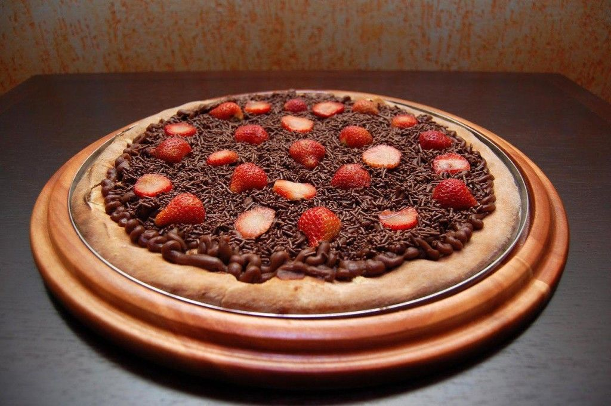
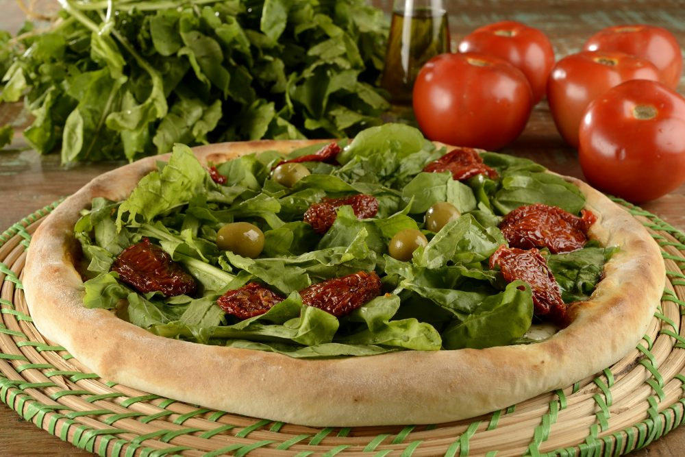

<ion-header>

  <ion-toolbar color="primary">
    <ion-buttons slot="start">
      <ion-icon name="md-arrow-back" class="padrao-icon-back" (click)="listaSaboresCategoria()" *ngIf="escondePrimeiro">
      </ion-icon>
    </ion-buttons>
    <ion-title class="titles-toolbar">Pedidos</ion-title>
    <ion-buttons slot="end">
      <ion-button (click)="enviarSugestao()">
        <ion-icon name="md-bulb" class="padrao-icon"></ion-icon>
      </ion-button>
      <ion-button (click)="sair()">
        <ion-icon name="md-log-out" class="padrao-icon"></ion-icon>
      </ion-button>
    </ion-buttons>
  </ion-toolbar>

</ion-header>

<ion-content>

  <ion-grid>
    <ion-row *ngIf="escondePrimeiro">
      <ion-col class="searchbar-input-espacamento">
        <ion-searchbar placeholder="Pesquisar..." [(ngModel)]="terms"></ion-searchbar>
      </ion-col>
    </ion-row>
    <ion-row>
      <ion-col>
        <ion-list class="padrao-list">
          <ion-item detail *ngIf="escondeSegundo && cat1" (click)="listaSaboresCategoria(1)">
            <ion-thumbnail slot="start">
              
            </ion-thumbnail>
            <div>
              <ion-label>Salgadas</ion-label>
            </div>
          </ion-item>
          <ion-item detail *ngIf="escondeSegundo && cat2" (click)="listaSaboresCategoria(2)">
            <ion-thumbnail slot="start">
              
            </ion-thumbnail>
            <div>
              <ion-label>Doces</ion-label>
            </div>
          </ion-item>
          <ion-item detail *ngIf="escondeSegundo && cat3" (click)="listaSaboresCategoria(3)">
            <ion-thumbnail slot="start">
              
            </ion-thumbnail>
            <div>
              <ion-label>Vegetarianas</ion-label>
            </div>
          </ion-item>
          <div *ngFor="let sabor of sabores | buscaSaborCliente: terms">
            <ion-item *ngIf="escondePrimeiro && sabor.categoria == categoria && sabor.empresa == empresa && sabor.status == 1">
              <ion-thumbnail slot="start">
                
              </ion-thumbnail>
              <div>
                <ion-label><b>{{ sabor.nome }}</b></ion-label>
                <ion-label>{{ sabor.ingredientes }}</ion-label>
              </div>
              <ion-checkbox [(ngModel)]="sabor.checked" slot="end"></ion-checkbox>
            </ion-item>
          </div>
        </ion-list>
      </ion-col>
    </ion-row>
  </ion-grid>

</ion-content>

<ion-footer>

  <ion-toolbar position="bottom">
    <div class="formatacao-padrao-button-texto">
      <ion-button [disabled]="garcomAberto" color="secondary" class="button-padrao-tamanho" (click)="chamarGarcon()">
        <ion-icon name="md-megaphone" class="espacamento-icon-button"></ion-icon> CHAMAR GARÇOM
        <ion-icon *ngIf="garcomAberto" slot="end" name="md-checkmark-circle" class="padrao-icon" color="success"></ion-icon>
      </ion-button>
    </div>
    <div class="formatacao-padrao-button-texto" *ngIf="escondePrimeiro">
      <ion-button [disabled]="!podeFazerPedido" color="secondary" class="button-padrao-tamanho" (click)="fazerPedido('')">
        <ion-icon name="md-checkmark-circle" class="espacamento-icon-button"></ion-icon> ENVIAR PEDIDO <div
          style="padding-left: 5px;"></div>
        <ion-badge class="padrao-badge" color="success">{{ pedidosAbertos }}</ion-badge>
      </ion-button>
    </div>
  </ion-toolbar>

</ion-footer>